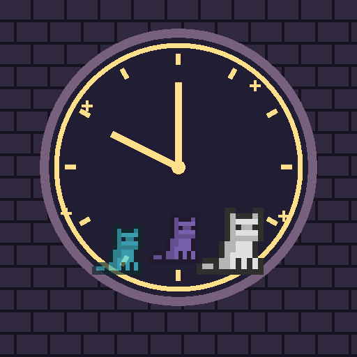

<- all projects

Past Selves
PC
Volume
Live
Nine lives, ten seconds. Team up with your past selves in a pixel castle puzzle.
The Pig King has frozen the castle ten seconds before midnight, and only Mitten the cat can move. Every run you record returns as a ghost, repeating your moves while you try a new plan. Let ghosts hold plates, push crates, distract pig guards and lend you a head to jump on, and work with levers, gates, lifts and crumbling platforms. Explore 90 campaign rooms across nine castle floors, including nine guardian rooms, find royal gems and dress Mitten in new coats and hats, then return for a Daily Loop drawn from 120 tested rooms.